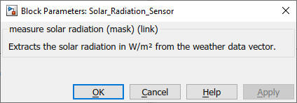

Solar_Radiation_Sensor
Path: CARNOT/Control
Purpose:
Measurement sensor for solar radiation.
Description:
The block extracts the direct and diffuse solar radiation in W/m2
from the Weather Data Bus (WDB).
The output, the global radiation is the sum of direct and diffuse radiation.
The data in the WDB defines wether the global, direct or diffuse radiation
are on a horizontal or inclided surface. Typically weather data sets contain
radiation on a horizontal surface. Use the
Radiation_on_Inclined_Surface
block (in Carnot/Weather) to calculate the radiation on an inclined surface
and modify the radiation in WDB.
Input:
| WDB | : | Weather Data Bus (WDB) |
Output:
| Iglb | : | global solar radiation in W/m2 |
Parameters and Dialog Box:

Examples:
Open the example explorer from the Matlab command window
ExampleBrowser
or load the examples via the CARNOT library.
NOTE:
The former Carnot weather data format doesn't contain the nomal beam radiation.
Use convert_weather.m to change the format
of the data.
Characteristics:
| Direct Feedthrough | : | Yes |
| Sample Time | : | Inherited from driving block |
| Vectorized | : | No |